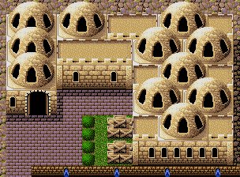

NOXIUM ELYSIUM > root:psiv/hunters-guild.html
The Hunter's Guild is a key organization in Phantasy Star IV: The End of the Millennium, located in the bustling town of Aiedo on the desert planet of Motavia. As a professional guild for mercenaries, the Hunter's Guild offers various jobs to its members, ranging from simple tasks like escort missions to more dangerous ones involving monster extermination and bounty hunting.
Players can visit the guild throughout the game to accept side quests, known as “jobs,” which provide rewards such as money, items, and valuable experience. These missions often delve deeper into the world of Phantasy Star IV, introducing new characters, uncovering hidden lore, and sometimes even offering humorous or unexpected outcomes.
The Hunter's Guild serves as a major hub for Chaz and his companions, who frequently take on these jobs to aid the citizens of Motavia, solve mysteries, and gather resources during their journey. It also reflects the societal need for freelance hunters in a world teetering on the edge of chaos, as various threats loom over the Algo Star System.
The Ranch Owner • Tinkerbell's Dog • The Missing Student • Fissure of Fear
The Stain in Life • The Dying Boy • Man with a Twist • Silver Soldier
THE RANCH OWNER
Reward: 2000 meseta
This is a request from a ranch owner at the village of Mile. 'The sand worms at my ranch have become so big that I'm at my wit's end. Please help me...' That is the message.
In this job, you're tasked with traveling to the small, remote town of Mile on the desert planet Motavia. There, you'll meet a ranch owner who raises sand worms, massive creatures that thrive in the harsh, arid environment. However, one of his sand worms has grown uncontrollably large and become a significant threat. Your mission is to confront and defeat this dangerous sand worm before it causes any more destruction. This battle will be particularly challenging due to the creature's immense size and strength, requiring strategic combat skills. Completing this job is crucial, as it must be finished before you can proceed to find the legendary Elsydeon sword later in the story.
TINKERBELLS'S DOG
Reward: 5000 meseta
This is a request from the house where Tinkerbell lives. 'Our household pet 'Rocky' has disappeared. Please find him...' That is the message. This certainly doesn't seem to be the caliber of work for a hunter.
This job becomes available after your first battle with Zio. In this mission, Tinkerbell, a resident of Aiedo, has lost her beloved dog, Rocky. To help reunite the two, you'll need to purchase a Shortcake from the bakery in Aiedo, as it's Rocky's favorite treat. With the Shortcake in hand, your search will take you to the towns of Monsen or Termi, where Rocky has been spotted. Successfully completing this task requires a bit of exploration, but it also adds a light-hearted break from the heavier events of the main story..
THE MISSING STUDENT
Reward: 3000 meseta
We have a request from the caretaker of the student dorms in Piata. 'One of the students entrusted to our care has disappeared. Please find her...' That is the message. This certainly doesn't seem to be the caliber of work for a hunter.
This job becomes available after you defeat Zio. In this mission, a concerned client asks you to locate a missing student who was last seen inside Zio's Church in the town of Kadary. To help her, you'll need to first purchase a Perolymate cake from a shop in Termi, as the student has fallen ill and requires this treat to recover. Once you enter the eerie church, you'll find the student in distress. Offering her the cake will revive her and complete the mission, rewarding you for your efforts and bringing closure to this rescue mission.
FISSURE OF FEAR
Reward: 5000 meseta
This is a request from Eddie who lives in Monsen. 'My son has fallen into a crack in the earth! Please help my son!' That is the message.
This job becomes available after your victory over Zio. In this mission, a boy from Monsen named Eddie has fallen into a deep crack that opened up outside his home. To rescue him, you'll need to enter the fissure, which leads to an underground area known as "The Hole." Inside, you'll encounter a dangerous creature called the Fract Ooze, blocking your way to the boy. Defeating this formidable enemy is essential to completing the mission and safely rescuing Eddie's son. The job adds an urgent rescue mission to the story, testing both your combat skills and bravery in the face of unknown dangers.
THE STAIN IN LIFE
Reward: 50,000 meseta
There is a request from the village chief of Uzo via letter transmission. 'My two daughters have left the village and have not returned since. Please find out where they are...' That is the message.
This job becomes available after you acquire the Hydrofoil. In this mission, the village chief seeks your help to bail out his two daughters, who have been imprisoned in the jail at Aiedo. Their mischief has landed them in trouble, and it's up to you to secure their release. Traveling to the bustling city of Aiedo, you'll need to navigate the jail system to pay their bail and free the chief's daughters. This job offers a more lighthearted yet crucial task, bringing relief to a worried father while adding a bit of comic relief to your journey.
THE DYING BOY
Reward: 10,000 meseta
There is a request from Mr. Culvers of Torinco via letter transmission. 'My son has fallen ill. I would like to discuss a certain plan I have to deal with this matter. I will go into more detail after we meet.' That is the message.
This job becomes available after you obtain the Hydrofoil. In this mission, a boy in the village of Torinco has fallen gravely ill, and his only wish is to hold a replica of the legendary Alis' Sword. To fulfill his request, you'll need to travel to Termi and purchase an Alis' Sword from the local shop. Once you have the sword, bring it to the sick boy in Torinco to grant him a small moment of happiness despite his condition. This heartfelt quest brings a poignant touch to the story, allowing you to offer comfort and compassion in the face of tragedy.
MAN WITH A TWIST
Reward: 20,000 meseta
This is a request from Mr. Sekreas of Torinco. 'We are at our wits' end due to a flock of birds who are eating up our terraced fields. Please exterminate them...' That is the message.
This job becomes available after you obtain the Hydrofoil. In this mission, you must venture to the Rappy Cave, where a legendary creature awaits: the King Rappy. Your task is to confront and defeat this unique foe, who poses a significant challenge to your combat skills. Along the way, you'll encounter a variety of Rappies, adding a whimsical touch to the adventure. Successfully completing this quest not only provides valuable rewards and experience but also deepens your connection to the vibrant world of Algo. This thrilling encounter highlights the blend of challenge and exploration that defines your journey, making it a memorable part of your Hunter's Guild experience.
SILVER SOLDIER
Reward: 80,000 meseta
This is a request from an old man in Zema. We are having problems with some strange machines that have begun to roam the outskirts of the village. We have not yet been attacked, but we villagers are afraid and would like something to be done about it. That is the message.
This job becomes available after you obtain the Hydrofoil. In this mission, you must first navigate to the Zema region, where you'll confront a horde of androids that pose a significant threat to the area. After dispatching these mechanical foes, your next objective is to travel to Vahal Fort, where you'll face the formidable challenge of shutting down Daughter, an advanced AI that controls the fort's defenses. This mission is crucial, as it must be completed before you can pursue the legendary Elsydeon sword. Successfully fulfilling this quest not only grants you essential rewards and experience but also plays a vital role in your overall quest to restore peace to Algo, showcasing the blend of strategy and urgency that characterizes your journey.